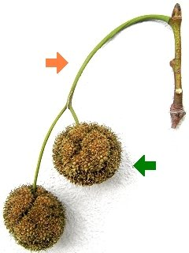

Die Früchte werden im September reif.

Die Früchte sind kleine Nüsschen.
Sie haben lange Haare und können leicht vom Wind davongetragen werden.
Die Einzelfrüchte bilden kugelige Fruchtstände.
Je 1 bis 3 Fruchtstände hängen an einem langen Stiel herab.